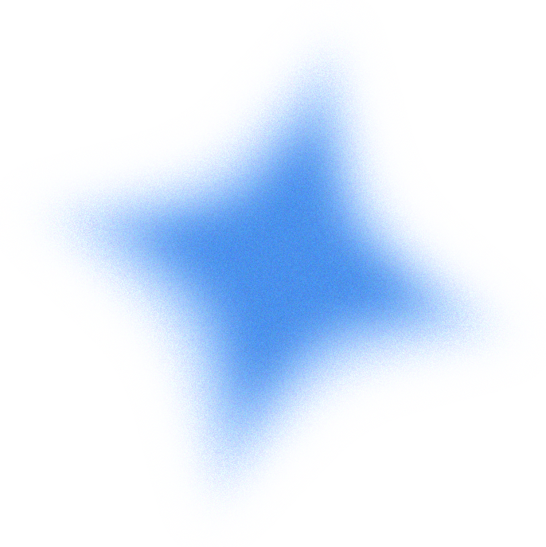
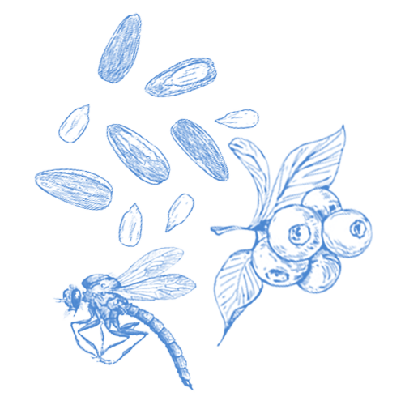
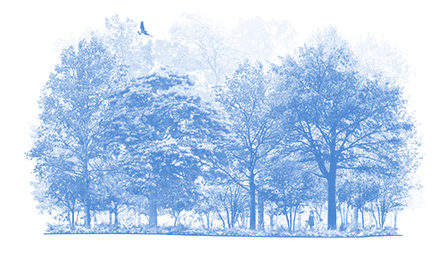

A strikingly marked, oversized sparrow of the East, feathered in bold black and warm reddish-browns – if you can get a clear look at it. Eastern Towhees are birds of the undergrowth, where their rummaging makes far more noise than you would expect for their size. Their chewink calls let you know how common they are, but many of your sightings end up mere glimpses through tangles of little stems.
Towhees eat many foods: seeds, fruits, insects, spiders, millipedes, centipedes, and snails, as well as soft leaf and flower buds in spring. They also eat seeds and fruits, including ragweeds, smartweeds, grasses, acorns, blackberries, blueberries, wheat, corn, and oats.
Eastern Towhees are characteristic birds of forest edges, overgrown fields and woodlands, and scrubby backyards or thickets. The most important habitat qualities seem to be dense shrub cover with plenty of leaf litter for the towhees to scratch around in. Towhees occur in the Appalachians to about 6,500 feet, but favor warm and dry south-facing slopes more than cool, moist northern faces.
Eastern Towhees usually nest on the ground, the nest cup sunk into the fallen leaves up to the level of the rim. In some cases they build their nests in shrubs or grape, honeysuckle, or greenbrier tangles, up to about 4 feet off the ground.
The nest consists of a 4-inch wide outer cup made of bark strips, grapevine bark, twigs, dead leaves, leaf stems, and sometimes string or cardboard. Inside is an inner cup about 2 inches wide and 1.5 inches deep lined with fine, dry grasses, rootlets, and sometimes animal hair. The female does all the building, typically taking up to 5 days to finish.